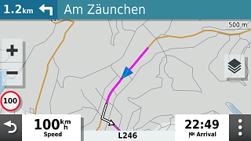
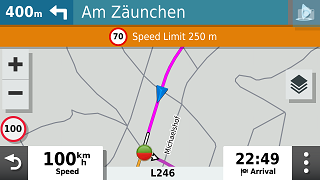

POI files, on the XT(2) they have the extension .gpi, can be useful if you
want to be warned while driving. The POI is not necessarily related to an
active route. A common application is speed camera’s. For speed
camera’s you can find enough examples on the net. I’m presenting
another example: ‘Strecken sperren’.
This is something that you can encounter in Germany. Some roads,
usually only known to local bikers, are closed for motorcycles during the
weekend, or are even completely closed. This is the link to a German
site.
And the link where you can download a GPX file:
Steps:
Download the GPX file.
- Optionally import it in BaseCamp to view what’s it about. (SASO
means closed on Saturday’s and Sunday’s (Samstag, Sonntag)
- Select the preset POI.
- Navigate to the zūmo XT\Memory Card\Garmin\POI folder
- And click on Set Default.
How it looks on the XT when you are within the proximity. (Default 500
mtr)
|

Note: The route says turn left. You may, or may not, be
allowed to enter! Depending on the day of the week.
|
|

Within 500 Meters, you get the alert.
|
Notes: